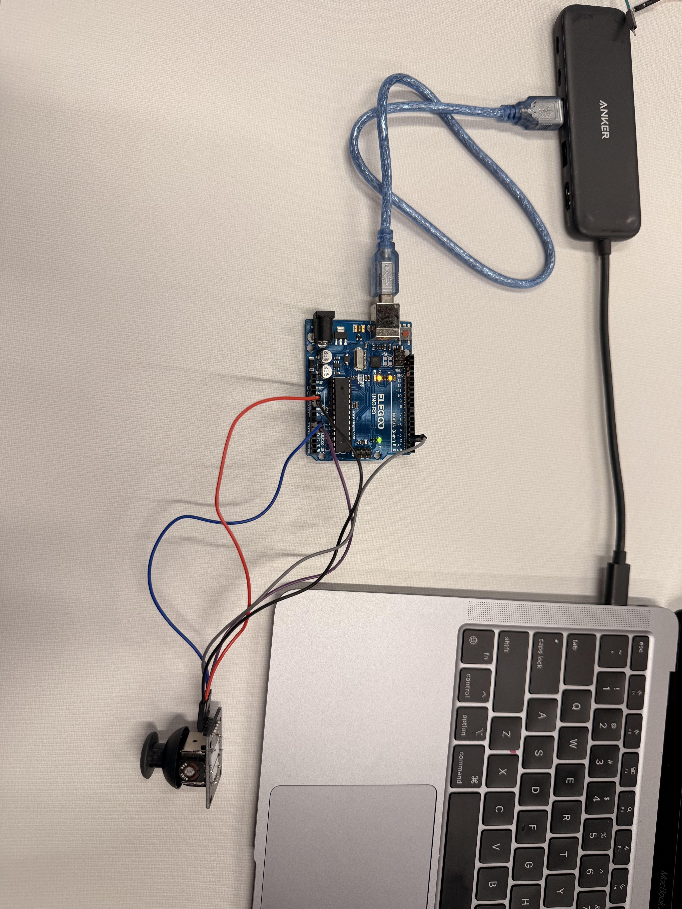

Technology & Innovation
Arduino Joystick Video Game Control
This project focused on connecting a physical Arduino joystick to my Reckless Driver game so I could control the game without relying on the WASD keys.
1. Project Overview
My goal was to use an Arduino joystick as a controller for my existing Reckless Driver game. This project allowed me to explore how physical hardware can communicate with a computer game and how code can turn joystick movements into game inputs.
2. Project Setup
I used a YouTube tutorial to help me set up the joystick and its wiring. With the help of the tutorial, I was able to get the joystick working on my first try. This made the setup process go smoothly and gave me a working starting point for the project.

3. How I Used AI
I asked AI to help write the code needed to connect the Arduino joystick to my game. The code reads the joystick's inputs and sends information that the game can use to control the car. It checks the joystick's direction so the game can respond to movement. It can also read the joystick's built-in button input, which can be used for additional controls.
I used AI to help me understand how to connect the controller to the game and explore using the button to pause, resume, and restart the game. I still had to test the controls myself to see how the joystick behaved.

4. Execution and Troubleshooting
After setting up the wiring, I had to connect the Arduino to the game through a serial port. Once I selected the port and connected successfully, the joystick was able to control the game.
One unexpected discovery was that pushing the joystick downward also activated its built-in button. Instead of ignoring this, I thought about how that extra input could be useful as another game control. I explored using the button for pausing, resuming, and restarting the game.
This process showed me why testing matters. Even when the main controls work, trying different inputs can reveal unexpected behavior and give me ideas for additional features.
5. My Thinking and Reflection
I was surprised that I was able to get the joystick working on my first try with the help of the YouTube tutorial. Asking AI to write the code made it easier to connect the hardware to the game, while testing helped me understand how the inputs affected the controls.
I learned that building a game controller involves both the physical wiring and the software that interprets the inputs. I also learned that an unexpected result does not always have to be a problem. Sometimes it can lead to a useful new feature. Overall, this project helped me learn more about hardware, coding, and troubleshooting.